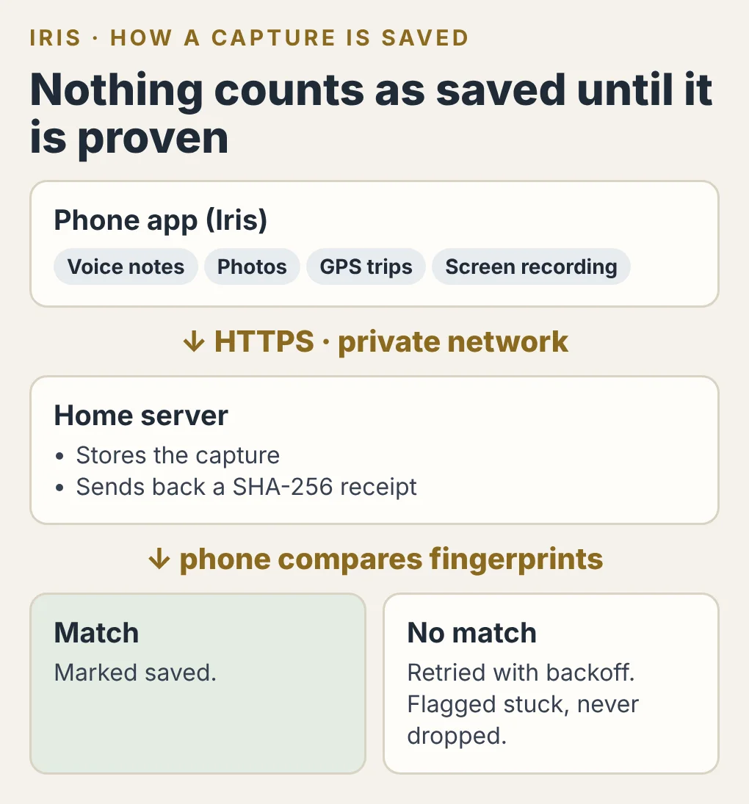

Iris
The phone side of Hermes — capture things in the field and know they actually reached my server.
Part of Hermes · Built with Claude under my direction · JavaScript, Capacitor, Android (Java), Python, Whisper

What it does
- Voice notes and photos, saved on the phone first.
- GPS trip logging with a mileage CSV export.
- Phone screen recording.
- Talks to my home server only over HTTPS on a private network.
Nothing counts as saved until it's proven
A capture is only marked saved when the server's SHA-256 receipt matches the phone's own copy. A failed send is retried with backoff and flagged as stuck if it keeps failing — it is never silently dropped.
Real problems it solved
- Updates “still looked old” on my phone. The build script was installing to the test emulator instead of the real phone; I changed it to install only to a real device.
- The background GPS switch kept turning itself off while tracking kept running. A plugin call returned an ID, not the Promise the code expected, so the switch reset — and every tap added another location watcher. I found and fixed the cause.